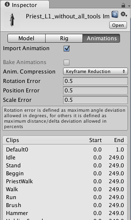
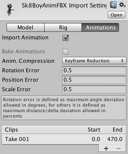

Unity Manual>User Guide>Creating Gameplay>Mecanim Animation System>Asset Preparation and Import>Splitting Animations
Splitting Animations
An animated character typically has a number of different movements that are activated in the game in different circumstances. These movements are called Animation Clips. For example, we might have separate animation clips for walking, running, jumping, throwing, dying, etc. Depending on the way the model was animated, these separate movements might be imported as distinct animation clips or as one single clip where each movement simply follows on from the previous one. In cases where there is only a single clip, the clip must be split into its component animation clips within Unity, which will involve some extra steps in your workflow.
Working with models that have pre-split animations
The simplest types of models to work with are those that contain pre-split animations. If you have an animation like that, the Animations tab in the Animation Importer Inspector will look like this:

You will see a list available clips which you can preview by pressing Play in the Preview Window (lower down in the inspector). The frame ranges of the clips can be edited, if needed.
Working with models that have unsplit animations
For models where the clips are supplied as one continuous animation, the Animation tab in the Animation Importer Inspector will look like this:

4In cases like this, you can define the frame ranges that correspond to each of the separate animation sequences (walking, jumping, etc). You can create a new animation clip by pressing (+) and selecting the range of frames that are included in it.
For example:
- walk animation during frames 1 - 33
- run animation during frames 41 - 57
- kick animation during frames 81 - 97

The Import Settings Options for Animation
In the Import Settings, the Split Animations table is where you tell Unity which frames in your asset file make up which Animation Clip. The names you specify here are used to activate them in your game.
For further information about the animation inspector, see the Animation Clip component reference page.
Adding animations to models that do not contain them
You can add animation clips to an Animation component even for models without muscle definitions (ie, non-Mecanim). You need to specify the default animation clip in the Animation property, and the available animation clips in the Animations property. The animation clips you add to such a non-Mecanim model should also be setup in a non-Mecanim way (ie, the Muscle Definition property should be set to None)
For models that have muscle definitions (Mecanim), the process is different:-
- Create a New Animator Controller
- Open the Animator Controller Window
- Drag the desired animation clip into the Animator Controller Window
- Drag the model asset into the Hierarchy.
- Add the animator controller to the Animator component of the asset.
Importing Animations using multiple model files
Another way to import animations is to follow a naming scheme that Unity allows for the animation files. You create separate model files and name them with the convention 'modelName@animationName.fbx'. For example, for a model called "goober", you could import separate idle, walk, jump and walljump animations using files named "goober@idle.fbx", "goober@walk.fbx", "goober@jump.fbx" and "goober@walljump.fbx". Only the animation data from these files will be used, even if the original files are exported with mesh data.

An example of four animation files for an animated character (note that the .fbx suffix is not shown within Unity)
Unity automatically imports all four files and collects all animations to the file without the @ sign in. In the example above, the goober.mb file will be set up to reference idle, jump, walk and wallJump automatically.
For FBX files, simply export a model file with no animation ticked (eg, goober.fbx) and the 4 clips as goober@animname.fbx by exporting the desired keyframes for each (enable animation in the FBX dialog).
(back to Mecanim introduction)
Page last updated: 2012-11-12